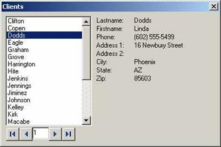
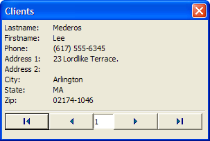

Displaying Data from a Table
As you can see in the above example, initializing the customer array is quite tedious. Alpha Five offers two array methods that are particularly useful for initializing arrays of pointers. These are <ARRAY>.INITIALIZE_PROPERTIES()and <ARRAY>.INITIALIZE_FROM_TABLE().
In the above example, the company array could be initialized more concisely as follows:
DIM customer[3] as P Customers = <<%dlg% Alpha,1 Main St.,Boston,MA,02116,6175551212 Beta,2 Center St.,New York,NY,01001,2125551212 Gamma,3 Maple Ln.,Cambridge,MA,02139,6178641212 %dlg% template = "Name,Address,City,State,Zip,Phone" customer.initialize_properties(template,customers) |
The
The following script displays data from the Clients table:
table_name = a5.Get_Path()+chr(92)+"clients.dbf" dim rec[1000] as P rec.initialize_from_table(table_name,".t.","lastname") dim i as N i = 1 ui_dlg_box("Clients",<<%dlg% {region} [.30,15i^#rec[\].lastname]; <%I=$a5_record_first%12First Record!first> <%I=$a5_record_previous%12Previous Record!previous> [.5i!i_changed] <%I=$a5_record_next%12Next Record!next> <%I=$a5_record_last%12Last Record!last>; {endregion}|{sp}| {region} Lastname: | {text=30:rec[i].lastname}; Firstname: | {text=30:rec[i].firstname}; Phone: | {text=30:rec[i].phone}; Address 1: | {text=30:rec[i].address1 }; Address 2: | {text=30:rec[i].address2 }; City: | {text=30:rec[i].city }; State: | {text=30:rec[i].state }; Zip: | {text=30:rec[i][.zip }; {endregion} %dlg%,<<%code% if inlist(a_dlg_button,"first","previous","next","last") then select case a_dlg_button = "first" i = 1 case a_dlg_button = "previous" if i > 1 then i = i - 1 end if case a_dlg_button = "next" if i < rec.first_empty("lastname") - 1 i = i + 1 end if case a_dlg_button = "last" i = rec.first_empty("lastname") - 1 end select a_dlg_button = "" end if if a_dlg_button = "i_changed " then 'prevent the user from navigating past the end a_dlg_button = "" if i > rec.first_empty("lastname") - 1 then i = rec.first_empty("lastname") - 1 end if end if if a_dlg_button = "lastname_changed" then rec[i].lastname = rec[i].lastname a_dlg_button = "" end if %code%) |
This script displays this dialog box:

Lesson 11: Displaying Data from a Table
Displaying Data from a Table - One Record at a Time
The above script reads the entire table into an array, and so would be impractical for a large table. The following script creates a dialog box that reads one record at a time, and so it could be used on a table of any size.
table_name = a5.Get_Path()+chr(92)+"clients.dbf" dim tbl as P tbl = table.open(table_name) last_record = tbl.records_get() tbl.close() dim rec[1] as P rec.initialize_from_table(table_name,"recno()=1","lastname") dim i as N i = 1 dim i2 as N i2 = 1 flag_changed = .f. ui_dlg_box("Clients",<<%dlg% {region} Lastname: | {text=30:rec[i].lastname}; Firstname: | {text=30:rec[i].firstname}; Phone: | {text=30:rec[i].phone}; Address 1: | {text=30:rec[i].address1 }; Address 2: | {text=30:rec[i].address2 }; City: | {text=30:rec[i].city }; State: | {text=30:rec[i].state }; Zip: | {text=30:rec[i].zip }; {endregion}; {line=1,0}; {region} <%I=$a5_record_first%12First Record!first> <%I=$a5_record_previous%12Previous Record!previous> [.5i2!i2_changed] <%I=$a5_record_next%12Next Record!next> <%I=$a5_record_last%12Last Record!last> {endregion} %dlg%,<<%code% if inlist(a_dlg_button, "first","previous", "next", "last") then select case a_dlg_button = "first" i2 = 1 case a_dlg_button = "previous" if i2 > 1 then i2 = i2 - 1 end if case a_dlg_button = "next" if i2 < last_record i2 = i2 + 1 end if case a_dlg_button = "last" i2 = last_record end select a_dlg_button = "" Rec.clear() rec.initialize_from_table(table_name,"recno()=" +i2,"lastname") end if if a_dlg_button = "i2_changed " then 'prevent the user from navigating past the end a_dlg_button = "" if i2 > last_record then i2 = last_record end if Rec.clear() rec.initialize_from_table(table_name,"recno()=" +i2,"lastname") end if %code%) |
The above script displays this dialog box:

Lesson 11: Displaying Data from a Table - One Record at a Time
The above script initializes an array with only one record, and then when ever the user navigates using the VCR buttons, or by typing a record number directly into the text box, a different record is fetched and loaded into the array with the commands:
rec.clear() rec.initialize_from_table(table_name,"recno()=" +i2,"lastname") |
which clears out the array, and then loads the selected record from the table into the array.
Next
Supported By
Alpha Five Version 5 and Above
Limitations
Desktop applications only.